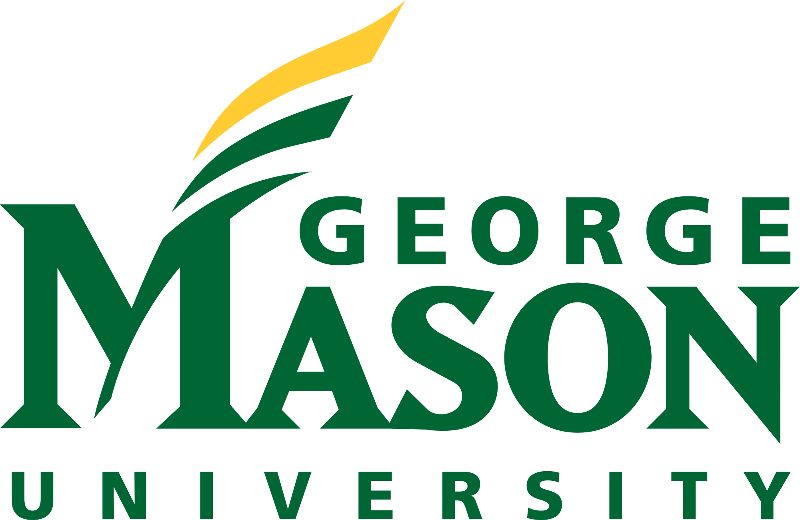

Computer Science Department
Welcome to the website of the Computer Science Department at George Mason University! With 50 faculty members, the CS Department at Mason is the largest department in the Volgenau School of Engineering, one of the largest departments on campus, and one of the largest CS departments in the Commonwealth of Virginia.
Today, not only are computing devices pervasive in society, but computational methods are used in almost every field of endeavor ranging from the arts and humanities to the hard sciences and engineering. Given the importance of computing in today's world, we strongly support the goal of "Computing for All", i.e., to providing a diverse array of programs and courses in computing to students from all backgrounds and of all levels.
The department offers two Bachelor of Science programs with a total enrollment of over 1600 students: the B.S. in Computer Science and the inter-disciplinary B.S. in Applied Computer Science; four M.S. programs in Computer Science, Information Systems, Information Security and Assurance, and Software Engineering with a total enrollment of 350 students; and a Ph.D. program in Computer Science with over 100 students. The department's faculty also teach and participate in the inter-disciplinary M.S. in Data Analytics Engineering and the Ph.D. in Information Technology offered by the Volgenau School of Engineering.
M.S. Programs
- Computer Science
The following basic courses are designated as core courses in their respective areas:
- Artificial Intelligence and Databases
- CS 550 - Database Systems
- CS 580 - Introduction to Artificial Intelligence
- CS 584 - Theory and Applications of Data Mining
- Programming Languages and Software Engineering
- CS 540 - Language Processors
- SWE 619 - Object-Oriented Software Specification and Construction
- SWE 621 - Software Modeling and Architectural Design
- Systems and Networks
- CS 555 - Computer Communications and Networking
- CS 571 - Operating Systems
- ISA 562 - Information Security Theory and Practice
- Theoretical Computer Science
- CS 583 - Analysis of Algorithms
- Visual Computing
- CS 551 - Computer Graphics
- Information Systems
-
- INFS 612 Principles and Practices of Communication Networks
- CS 550 Database Systems
- INFS 622 Information Systems Analysis and Design
- ISA 562 Information Security Theory and Practice
- Information Security and Assurance
- ISA 562 Information Security Theory and Practice
- ISA 656 Network Security
- INFS 612 Principles and Practice of Communication Networks OR CS 555 - Computer Communications and Networking
- Software Engineering
- SWE 619 Object-Oriented Software Specification and Construction
- SWE 621 Software Modeling and Architectural Design
- SWE 632 User Interface Design and Development
- SWE 637 Software Testing
CS Department Survey
